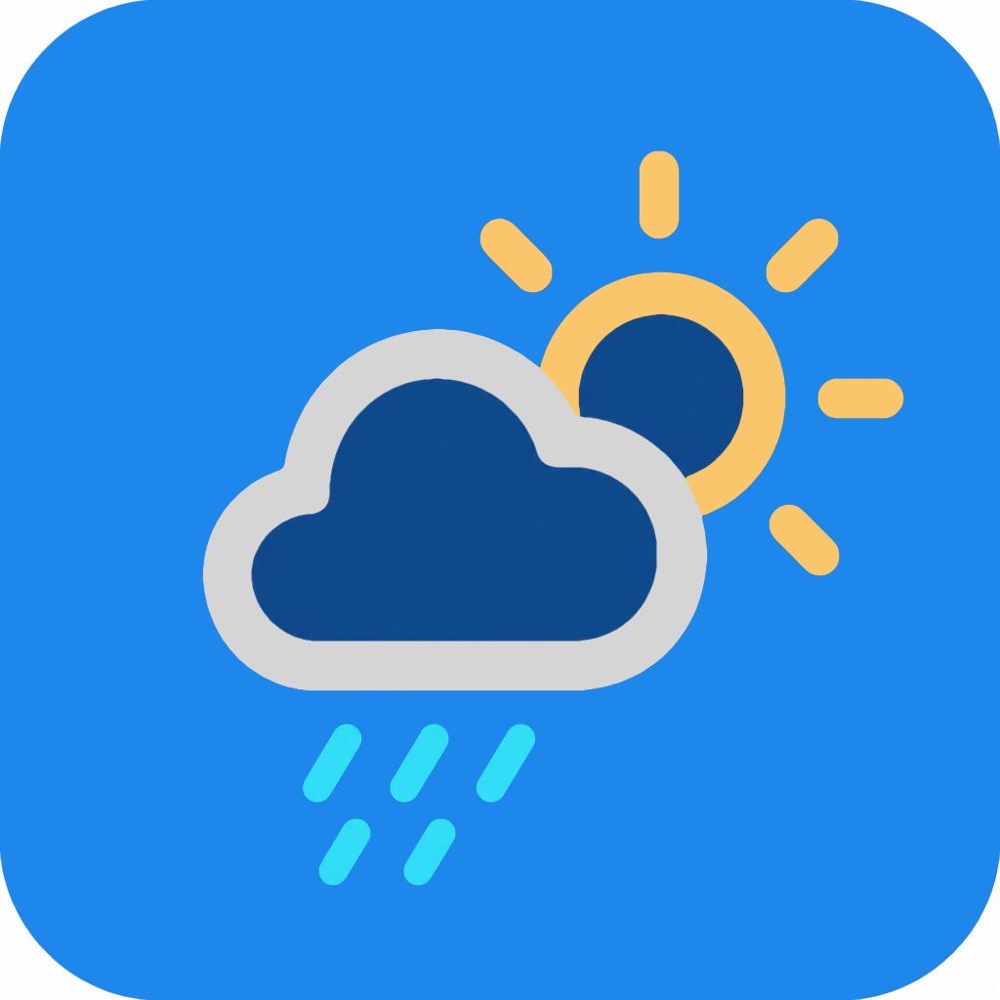
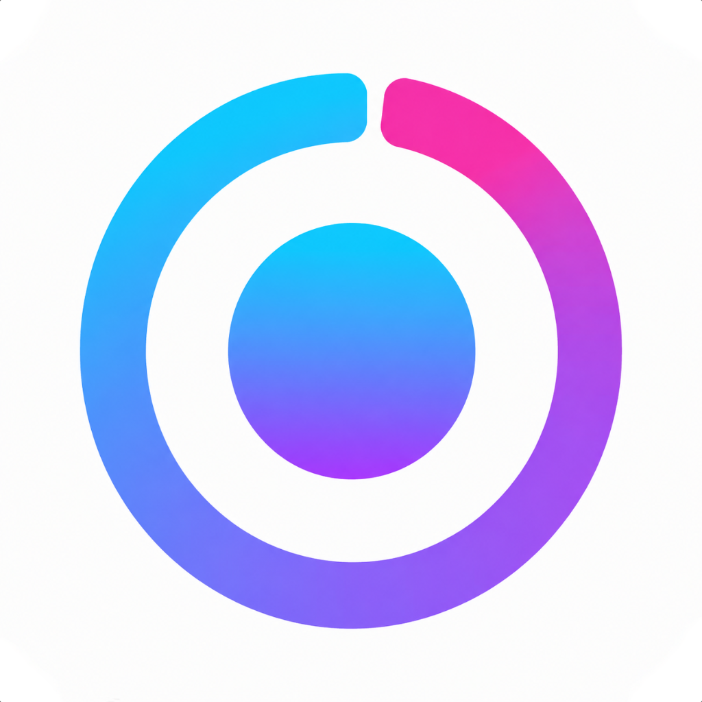

Des apps très utiles,
avec une touche très... "Pato"
Un petit univers d’applications iOS imaginées à partir d'une idée et d'une feuille blanche, entre créativité, simplicité, technologie et quelques promenades bien inspirées autour de Vertou.
Des applications simples, élégantes et pensées pour rendre service sans transformer l’iPhone en tableau de bord d’Airbus. Ici, le premium reste lisible, humain et légèrement espiègle.
Que voulez-vous faire aujourd’hui ?
Choisissez une envie, nous vous orientons vers les applications les plus utiles. Rien n’est envoyé : ce choix reste sur votre appareil.
Vos raccourcis sont prêts.
Retrouvez les apps que vous avez épinglées.
Ascens
Trouver les salles, blocs et falaises autour de soi, préparer sa sortie et partager les meilleurs terrains de jeu.
Découvrir · bientôt disponible
Pato Life
Une nouvelle façon de lire et vivre l’univers du blog Pato, avec une expérience plus fluide, plus personnelle et plus moderne.

Melovia
Une application pensée pour accompagner la vie de vos animaux : santé, souvenirs, documents et moments précieux.

Finelio
Comprendre plus simplement son épargne, ses rendements et les frais qui grignotent parfois les performances.

Loopa Move
Générer des boucles de marche, course ou vélo autour de soi, pour redécouvrir son environnement autrement.

Pato Météo
La météo pensée comme un coach de sorties : marcher, courir, randonner ou rouler au meilleur moment.
Toujours Là
Un repère quotidien pour rassurer ses proches : confirmer que tout va bien et alerter en cas de silence inhabituel.

Pulse
Un jeu de timing aussi simple qu’addictif : observez le rythme, touchez au moment parfait et poussez votre meilleur score.
Découvrir · bientôt disponible